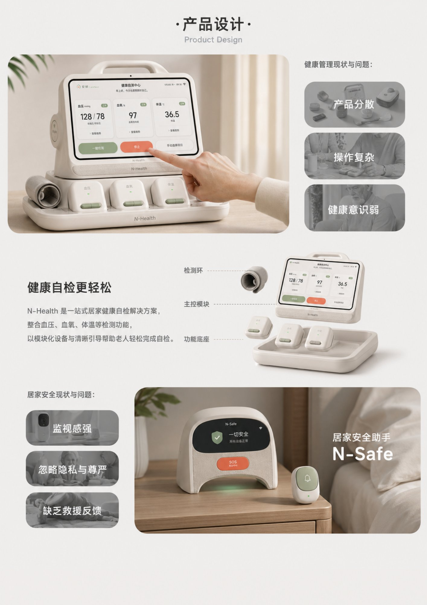
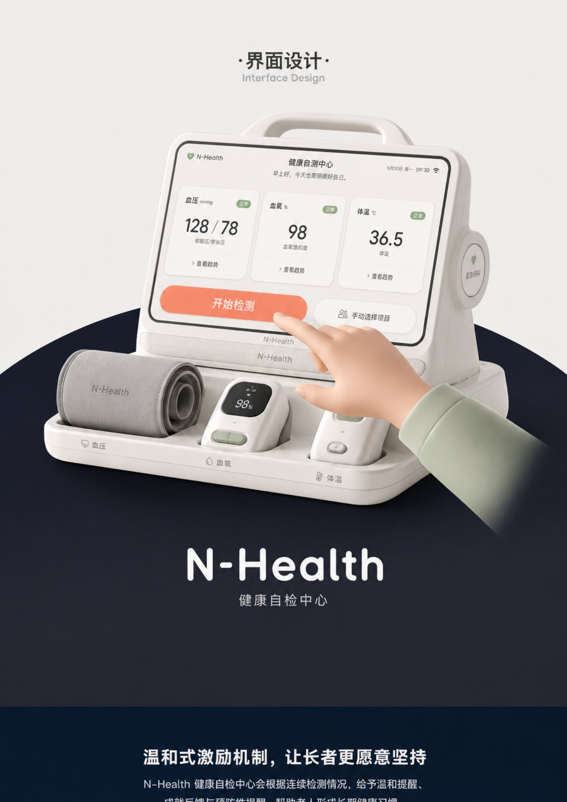
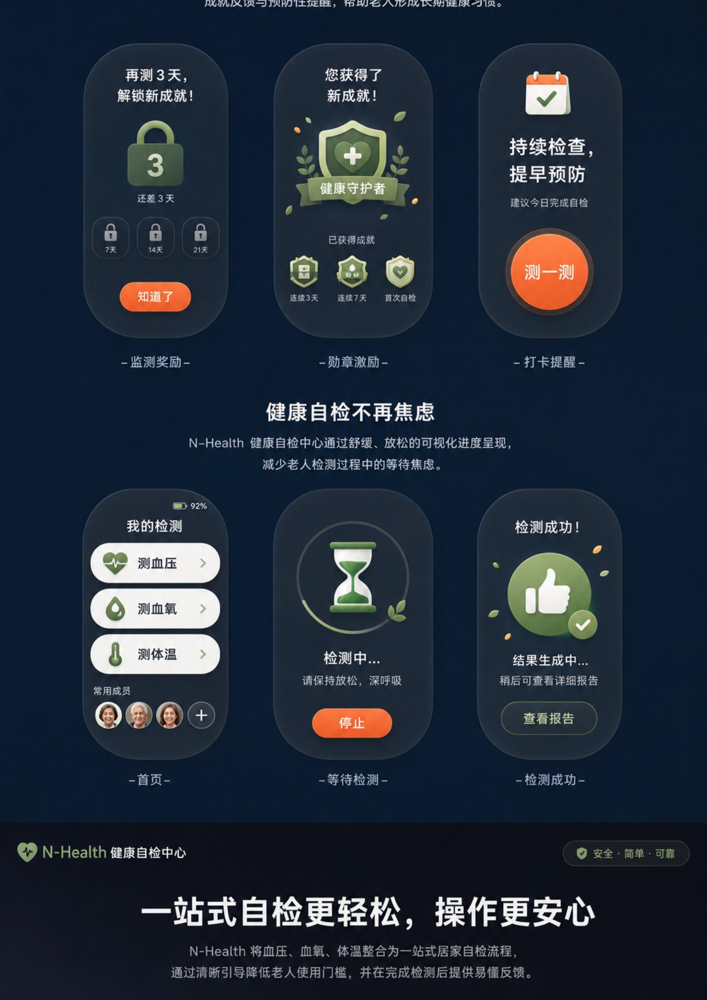
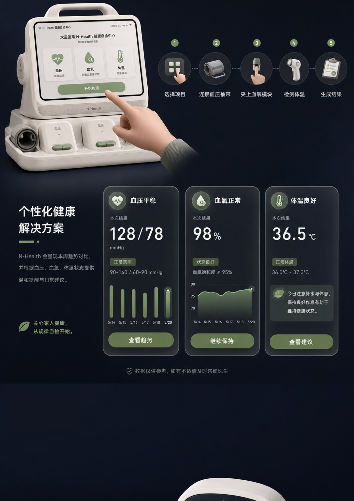
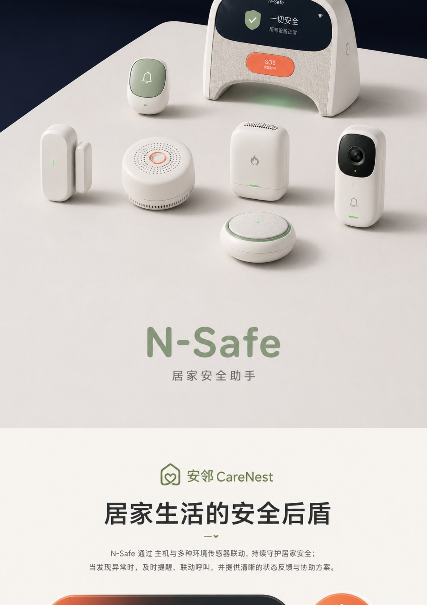
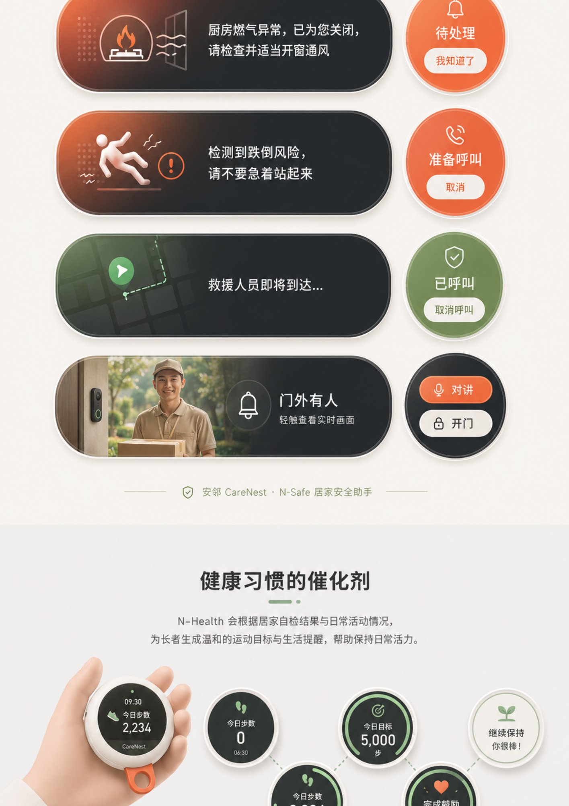
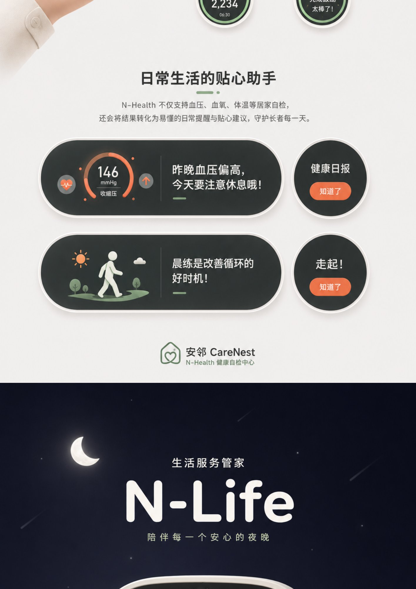
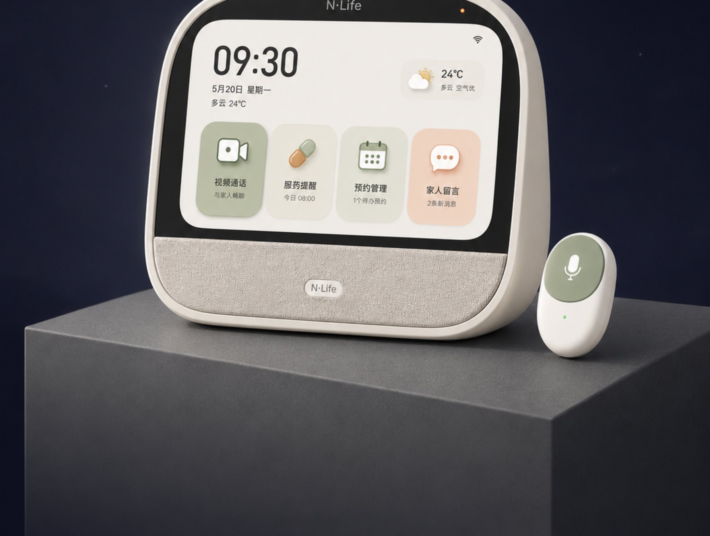
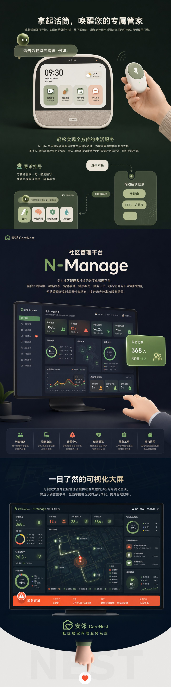

works / anlin
安邻 CareNest
ANLIN CARENEST · 适老型社区居家养老服务系统与产品创新
面向社区与家庭的一体化养老服务系统与产品创新方案。以安全守护、健康管理和生活服务为核心，围绕「安邻 CareNest」构建 N-Manage 社区管理平台、N-Life 居家生活管家、N-Safe 居家安全助手、N-Health 健康自检中心四个核心模块：从服务系统与硬件生态的整体构建，到健康自检、居家安全、生活服务等各模块的界面设计与产品交互，形成面向长者、家人与社区管理者完整协同的养老数字化方案。

项目主视觉 / Key Visual
「安邻 CareNest」适老型社区居家养老服务系统与产品创新：N-Manage 社区管理平台、N-Life 居家生活管家、N-Safe 居家安全助手、N-Health 健康自检中心四个核心模块，搭配智能硬件生态整体呈现。

系统定位与设计理念 / System Overview
连接人与设备、家庭与社区、服务与机构的一体化养老服务系统，回应社区与家庭场景中的操作门槛高、管理信息割裂、安全感不足、服务资源分散等现实问题；以安全可靠、多维监测、协同响应、简单易用的设计系统贯穿整体。

产品定义：健康自检与居家安全 / Product Definition
N-Health 定位一站式居家健康自检解决方案，整合血压、血氧、体温等检测功能，以模块化设备与清晰引导降低操作门槛；N-Safe 居家安全助手回应监视感强、忽略隐私与尊严、缺乏救援反馈等居家安全现状问题。

N-Health 界面设计：健康自测中心 / Interface Design
健康自测中心界面：展示血压、血氧、体温三项指标与趋势查看入口，支持一键「开始检测」与手动选择检测项目，长辈友好、清晰易读。

N-Health 温和式激励 / Gentle Motivation
通过连续打卡提醒、勋章激励与监测奖励，配合舒缓放松的可视化进度呈现，让长者更愿意坚持规律自检，减少检测过程中的等待焦虑。

N-Health 检测流程与结果反馈 / Check-up Flow
连接血压袖带、夹上血氧模块、检测体温的完整引导流程；结果页呈现本次结果、正常范围参考与本周趋势对比，并根据检测状态给出温和提醒与日常建议。

N-Safe 居家安全助手 / Home Safety
作为居家生活的安全后盾，N-Safe 通过主机与多种环境传感器联动持续守护居家安全；发现异常时及时提醒、联动呼叫，并提供清晰的状态反馈与协助方案。

N-Safe 场景告警与响应 / Alarm Scenarios
厨房燃气异常自动关闭并提醒通风、检测到跌倒风险自动准备呼叫救援、门外有人轻触查看实时画面等场景联动；同屏呈现 N-Health 运动目标与完成鼓励。

N-Health 健康日报与生活提醒 / Daily Health Report
将自检结果转化为易懂的健康日报与生活提醒：如昨晚血压偏高的休息提示、晨练改善循环的建议，并自然引出 N-Life 生活服务管家的陪伴场景。

N-Life 生活服务管家界面 / Life Companion UI
N-Life 生活服务管家界面：视频通话、服药提醒、预约管理、家人留言等功能入口，陪伴长者的每一个安心夜晚与日常起居。

N-Life 语音管家 + N-Manage 社区管理平台 / Voice Butler & Community Platform
拿起话筒即可唤醒专属管家，通过语音完成服药提醒、导诊挂号等生活服务；N-Manage 社区管理平台专为社区管理者打造，通过告警中心与可视化大屏实时掌握长者状态、快速识别告警事件，提升响应效率与服务质量。